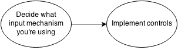

Modern web user input goes beyond simple mouse and keyboard: think of touchscreens for example. This article provides recommendations for managing user input and implementing controls in open web apps, along with FAQs, real-world examples, and links to further information for anyone needing more detailed information on the underlying technologies. Relevant APIs and events include touch events, Pointer Lock API, Screen Orientation API, Fullscreen API, Drag & Drop and more.
The following diagram illustrates the typical workflow for implementing user input mechanisms:

First of all, you need to decide which input mechanisms you want to cover in your application out of mouse, keyboard, finger touch and so on. Once you decided the input mechanisms, you can control them using tools offered by the web platform or JavaScript libraries.
Available input mechanisms depend on the capabilities of the device running the application:
The following is a set of recommendations and best practices for using such tools in Open Web Apps.
Keyboard input can be controlled by your app. For example if you want to add controls when any key gets pressed, you need to add an event listener on the window object:
window.addEventListener("keydown", handleKeyDown, true);
window.addEventListener("keyup", handleKeyUp, true);
where handleKeyDown and handleKeyUp are the functions implementing the controls about the keydown and keyup events.
Note: Have a look at the Events reference and {{domxref("KeyboardEvent")}} guide to find out more about keyboard events.
The events occurring when the user interacts with a pointing device such as a mouse are represented by the {{domxref("MouseEvent")}} DOM Interface. Common mouse events include click, dblclick, mouseup, and mousedown. The list of all events using the Mouse Event Interface is provided in the Events reference.
When the input device is a mouse, you can also control user input through the Pointer Lock API and implement Drag & Drop (see below).
When developing web applications meant to be installed on touchscreen devices, it’s a good practice to take into consideration the different capabilities in terms of screen resolution and user input. Touch events can help you implement interactive elements and common interaction gestures on touchscreen devices.
If you want to use touch events, you need to add event listeners and specify handler functions, which will be called when the event gets fired:
element.addEventListener("touchstart", handleStart, false);
element.addEventListener("touchcancel", handleCancel, false);
element.addEventListener("touchend", handleEnd, false);
element.addEventListener("touchmove", handleMove, false);
where element is the DOM element you want to register the touch events on.
Note: For further information about what you can do with touch events, please read our touch events guide.
When dealing with devices that incorporate multiple forms of input, like mouse, finger touch and pen input, it might be hard to develop a solution that works for all these different control mechanisms. Pointer Events help developers more easily manage events across devices by normalizing the handling of each one. A pointer can be any point of contact on the screen made by a mouse cursor, pen, touch (including multi-touch), or other pointing input device. The events for handling generic pointer input look a lot like those for mouse: pointerdown, pointermove, pointerup, pointerover, pointerout, etc.
Note: Pointer Events are not widely supported yet, but a pointer.js polyfill is available on Mozilla Github.
In some cases, typically game development, you might need to access mouse events even when the cursor goes past the boundary of the browser or screen: the {{domxref("Pointer_Lock_API")}} gives you full control of the pointing device.
This is the code to request pointer lock on an element:
element.requestPointerLock();
Note: For a full tutorial and reference, read our {{domxref("Pointer_Lock_API")}} page.
When screen orientation matters for your application, you can read the screen orientation state, be informed when this state changes, and able to lock the screen orientation to a specific state (usually portrait or landscape) through the Screen Orientation API.
Orientation data can be retrieved through the {{domxref("screen.orientation")}} attribute or through the orientation media feature. When screen.orientation changes, the {{domxref("screen.orientationchange")}} event is fired on the screen object. Locking the screen orientation is made possible by invoking the {{domxref("screen.lockOrientation")}} method, while the {{domxref("screen.unlockOrientation")}} method removes all the previous screen locks that have been set.
Note: More information about the Screen Orientation API can be found in Managing screen orientation.
You might need to present an element of your application (such as a {{ htmlelement("video") }}, for example) in fullscreen mode. You can achieve this by calling {{domxref("Element.requestFullscreen()")}} on that element. Bear in mind that many browsers still implement this with a vendor prefix, so you will probably need to fork your code something like this:
var elem = document.getElementById("myvideo");
if (elem.requestFullscreen) {
elem.requestFullscreen();
} else if (elem.msRequestFullscreen) {
elem.msRequestFullscreen();
} else if (elem.mozRequestFullScreen) {
elem.mozRequestFullScreen();
} else if (elem.webkitRequestFullscreen) {
elem.webkitRequestFullscreen();
}
Note: To find more out about adding fullscreen functionality your application, read our documentation about using fullscreen mode.
Drag & Drop allows your application’s users to click and hold the mouse button down over an element, drag it to another location, and release the mouse button to drop the element there.
Here is an example that allows a section of content to be dragged.
<div draggable="true" ondragstart="event.dataTransfer.setData('text/plain', 'This text may be dragged')">
This text <strong>may</strong> be dragged.
</div>
in which we:
draggable attribute to true on the element that you wish to make draggabledragstart event and set the drag data within this listenerNote: You can find more information in the MDN Drag & Drop documentation.
In open web apps any DOM element can be made directly editable using the contenteditable attribute.
<div contenteditable="true">
This text can be edited by the user.
</div>
Note: Compatibility information, examples and other resources can be found in the Content Editable guide.
{{htmlelement("canvas")}} with more than one finger at a time. It will only work on a browser that supports touch events.{{htmlelement("canvas")}} element. When you click the canvas, pointer lock is then used to remove the mouse pointer and allow you to move the ball directly using the mouse.